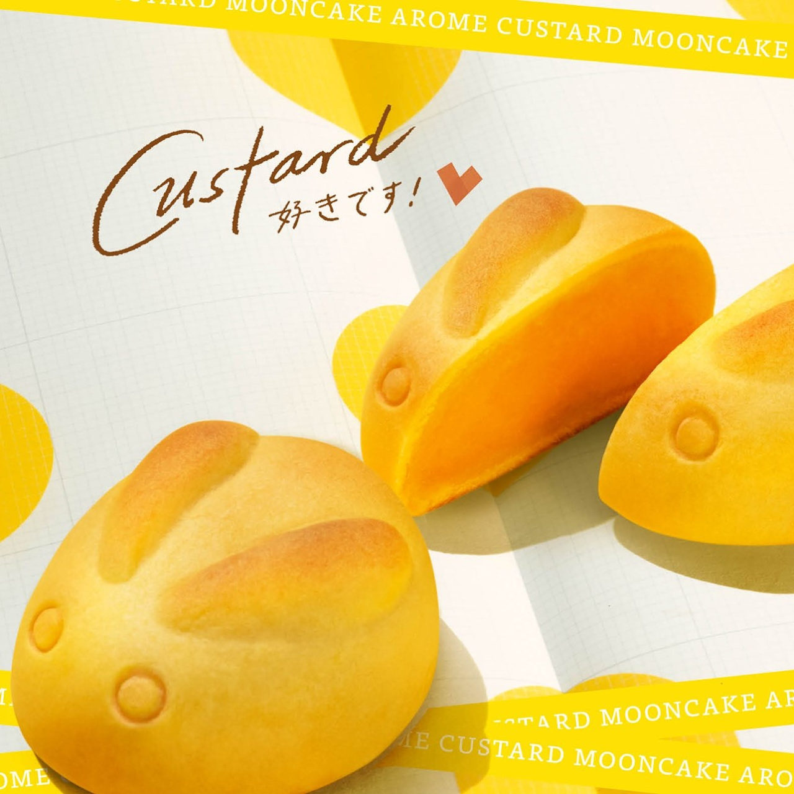
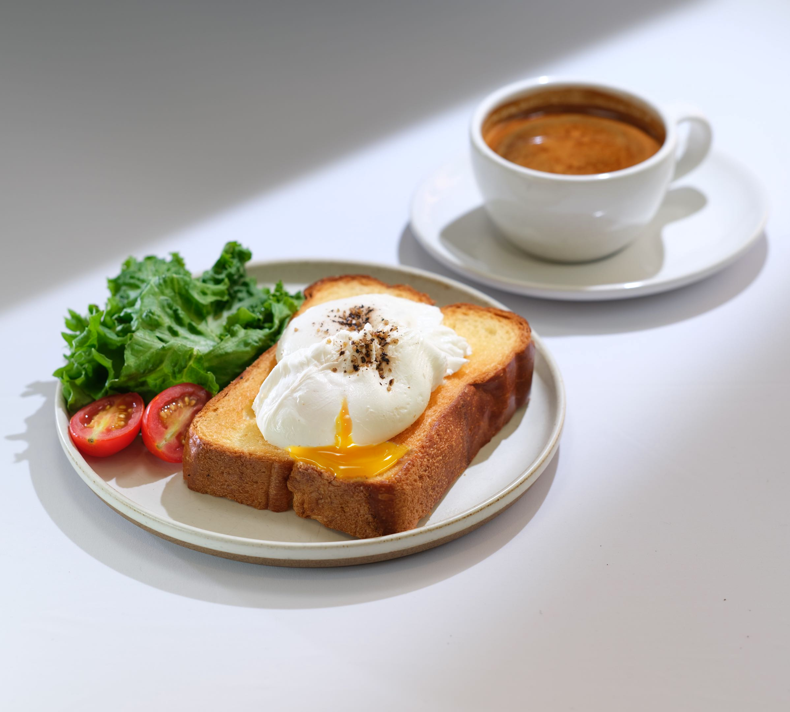
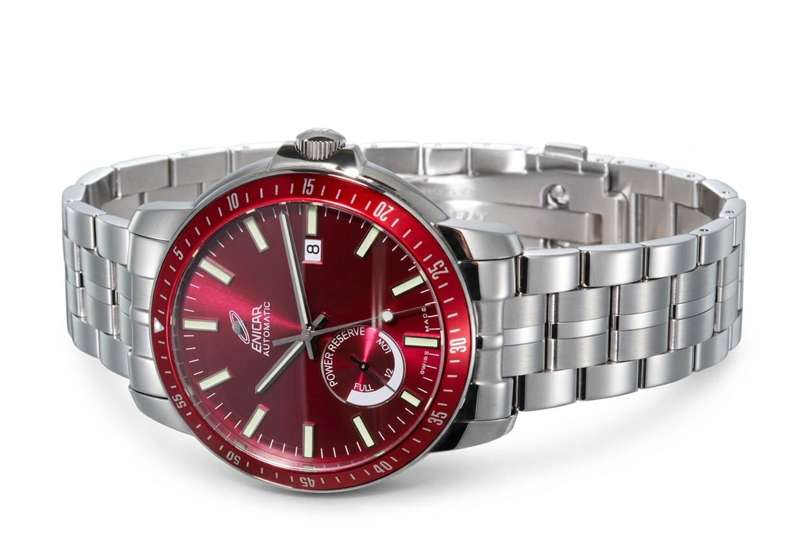

Every project is customised to your needs. Most clients choose our photography Services + Food Styling Services combined package for the strongest results.

We offer top-tier Hong Kong food photography, capturing everything from menus and products to interiors and lifestyle scenes. Beyond the lens, we will adjust the photography style to align with the design, ensuring your brand visuals remain highly consistent across all marketing channels, including social media images, posters, and menus.

We collaborate with chefs to style and plate dishes that look truly irresistible. From preparation to final presentation, we perfect every detail to capture your food's most delicious form.

Each project is tailored to the client's needs, with post-production work including fine-tuning colors, contrasts, and details to ensure that each dish is presented in perfect condition while creating the visual aesthetics the client envisions.